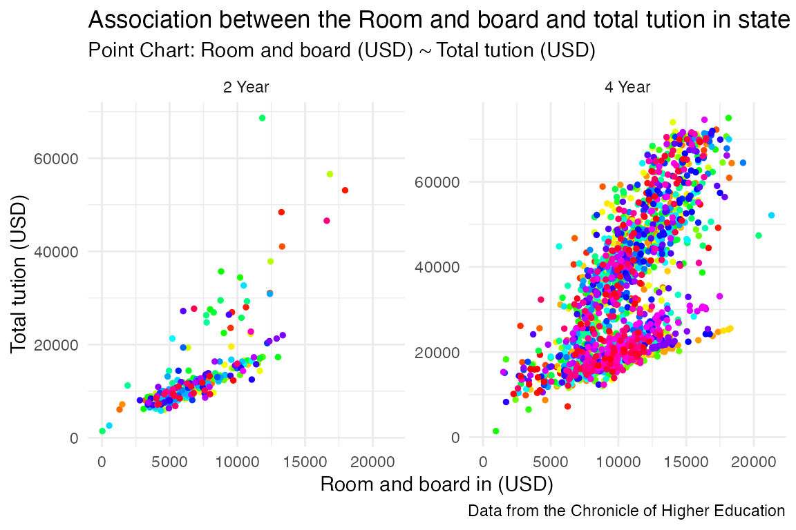
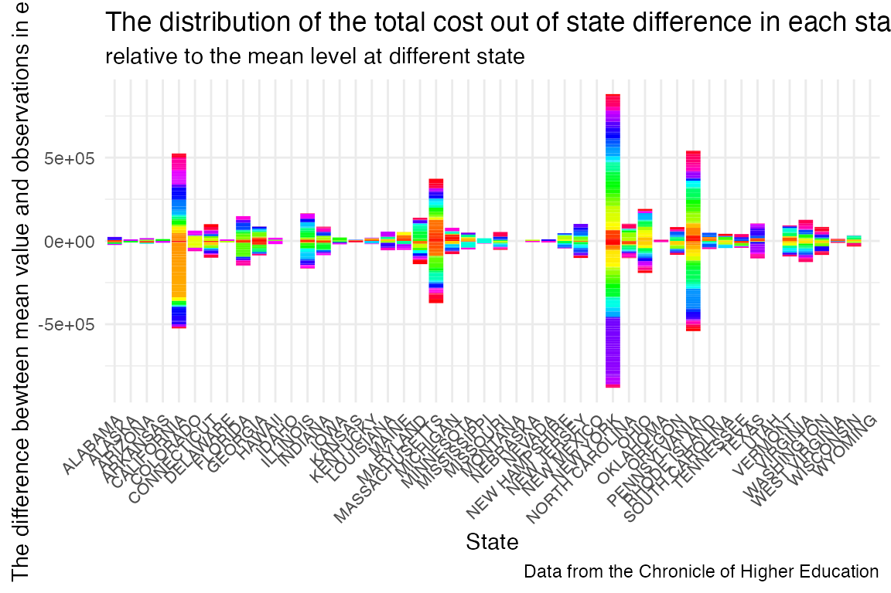
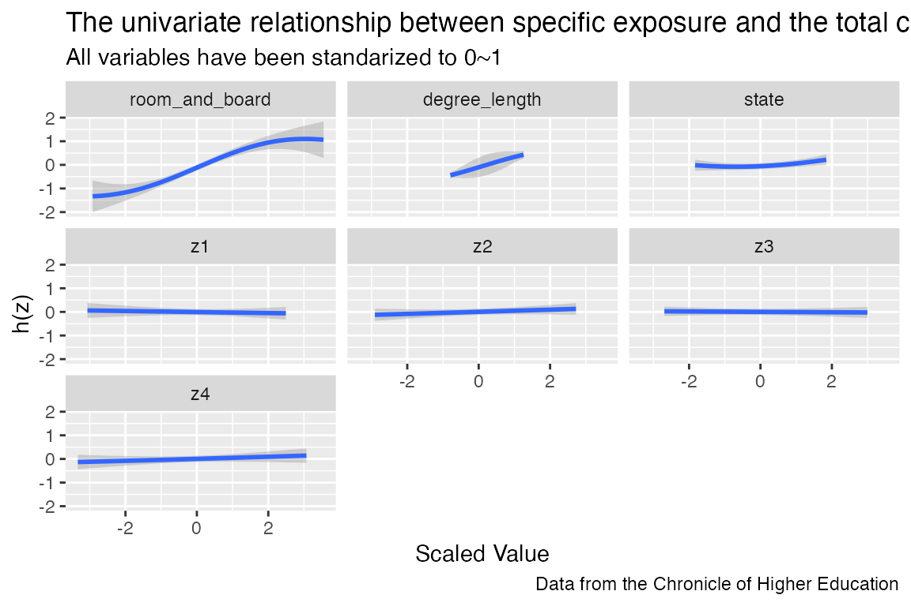

The package I choose.
Package: bkmr
Research Question
- The cost distribution under different variables.
- The association between Room and board and Tuition for in-state residents (Total cost).
- Try to use Bayesian kernel machine regression to explore unlinear assocition between multivariables and cost.
Original Data
- Data was downloaded from TidyTuesday. The data this week comes from many different sources but originally came from the US Department of Education. Tuition and fees by college/university for 2018-2019, along with school type, degree length, state, in-state vs out-of-state from the Chronicle of Higher Education. Data Source
Data Dictionary
- Here is a data dictionary for what all the column names mean: data dictionary
Load the data into R
Download example data from github and save them in the local site.
if (!require("tidyverse", quietly = TRUE)) {
install.packages("tidyverse", repos = "http://cran.us.r-project.org")
}
#> ── Attaching core tidyverse packages ──────────────────────── tidyverse 2.0.0 ──
#> ✔ dplyr 1.1.2 ✔ readr 2.1.4
#> ✔ forcats 1.0.0 ✔ stringr 1.5.0
#> ✔ ggplot2 3.4.3 ✔ tibble 3.2.1
#> ✔ lubridate 1.9.2 ✔ tidyr 1.3.0
#> ✔ purrr 1.0.2
#> ── Conflicts ────────────────────────────────────────── tidyverse_conflicts() ──
#> ✖ dplyr::filter() masks stats::filter()
#> ✖ dplyr::lag() masks stats::lag()
#> ℹ Use the conflicted package (<http://conflicted.r-lib.org/>) to force all conflicts to become errors
if (!require("tidytuesdayR", quietly = TRUE)) {
install.packages("tidytuesdayR", repos = "http://cran.us.r-project.org")
}
if (!require("here", quietly = TRUE)) {
install.packages("here", repos = "http://cran.us.r-project.org")
}
#> here() starts at /Users/gsn/Desktop/2023-2024/【JHU】Term-2/【Core】Statistical Programming Workflow/bkmr
if (!require("ggplot2", quietly = TRUE)) {
install.packages("ggplot2", repos = "http://cran.us.r-project.org")
}
if (!require("purrr", quietly = TRUE)) {
install.packages("purrr", repos = "http://cran.us.r-project.org")
}
library(here)
library(purrr)
## Test if a directory named data exists locally. If it does not, write an R function that creates it programmatically. Saves the data only once
if (!file.exists(here("data", "tuesdata_tution_cost.csv"))) {
tuesdata <- tidytuesdayR::tt_load('2020-03-10')
tuition_cost <- tuesdata$tuition_cost
tuition_income <- tuesdata$tuition_income
save_directory <- here("data") # File for saving data, must be created
if (!dir.exists(save_directory)) {
dir.create(save_directory, recursive = TRUE)
}
# save the files to csv objects ()
write.csv(tuesdata$tuition_cost, file = here("data", "tuesdata_tuition_cost.csv"))
write.csv(tuesdata$tuition_income, file = here('data', 'tuesdata_tuition_income.csv'))
}
#> --- Compiling #TidyTuesday Information for 2020-03-10 ----
#> --- There are 5 files available ---
#> --- Starting Download ---
#>
#> Downloading file 1 of 5: `diversity_school.csv`
#> Downloading file 2 of 5: `historical_tuition.csv`
#> Downloading file 3 of 5: `salary_potential.csv`
#> Downloading file 4 of 5: `tuition_cost.csv`
#> Downloading file 5 of 5: `tuition_income.csv`
#> --- Download complete ---
## Read in the data locally each time you knit/render
tuition_cost <- read.csv(here("data", "tuesdata_tuition_cost.csv")); tuition_cost$X = NULL
tuition_income <- read.csv(here("data", "tuesdata_tuition_income.csv")); tuition_income$X = NULL
library(tidyverse)
library(stringr)
# 1. Start with tuition cost dataset and drop any rows with NAs.
tuition_cost <- tuition_cost %>%
drop_na()
# 2. Convert the state names (character strings) to all upper case.
tuition_cost <- tuition_cost %>%
mutate(state = str_to_upper(state))
# 3. Create new column titled state_code_type that combines the state_code and school type into one column separated by “-”. (e.g. “TX-Private”).
tuition_cost <- tuition_cost %>%
unite(state_code_type, state_code, type, sep = '-')
# calculate the distribution of room and board of different schooles
tuition_cost_summary <- tuition_cost %>%
group_by(state_code_type) %>%
summarise(
mean_room_and_board = mean(room_and_board),
sd_room_and_board = sd(room_and_board))
head(tuition_cost_summary)
#> # A tibble: 6 × 3
#> state_code_type mean_room_and_board sd_room_and_board
#> <chr> <dbl> <dbl>
#> 1 AK-Private 6500 1131.
#> 2 AK-Public 10832. 2070.
#> 3 AL-Private 8800. 2366.
#> 4 AL-Public 6994. 2815.
#> 5 AR-Private 8147. 1670.
#> 6 AR-Public 7315. 2024.
# calculate the distribution of body mass of penguins
tuition_cost_summary2 <- tuition_cost %>%
select(-room_and_board) %>%
group_by(state_code_type, degree_length) %>%
summarise(
mean_in = mean(in_state_tuition),
sd_mass = sd(in_state_tuition))
#> `summarise()` has grouped output by 'state_code_type'. You can override using
#> the `.groups` argument.
head(tuition_cost_summary2)
#> # A tibble: 6 × 4
#> # Groups: state_code_type [4]
#> state_code_type degree_length mean_in sd_mass
#> <chr> <chr> <dbl> <dbl>
#> 1 AK-Private 4 Year 15065 8153.
#> 2 AK-Public 2 Year 4300 NA
#> 3 AK-Public 4 Year 7622. 501.
#> 4 AL-Private 4 Year 18896. 8853.
#> 5 AL-Public 2 Year 5433. 1758.
#> 6 AL-Public 4 Year 10805. 920.
# combine the observed data and summarized result
tuition_cost_combined <- left_join(tuition_cost, tuition_cost_summary, 'state_code_type')
head(tuition_cost_combined)
#> name state state_code_type degree_length
#> 1 Abilene Christian University TEXAS TX-Private 4 Year
#> 2 Abraham Baldwin Agricultural College GEORGIA GA-Public 2 Year
#> 3 Academy of Art University CALIFORNIA CA-For Profit 4 Year
#> 4 Adams State University COLORADO CO-Public 4 Year
#> 5 Adelphi University NEW YORK NY-Private 4 Year
#> 6 Adirondack Community College NEW YORK NY-Public 2 Year
#> room_and_board in_state_tuition in_state_total out_of_state_tuition
#> 1 10350 34850 45200 34850
#> 2 8474 4128 12602 12550
#> 3 16648 27810 44458 27810
#> 4 8782 9440 18222 20456
#> 5 16030 38660 54690 38660
#> 6 11660 5375 17035 9935
#> out_of_state_total mean_room_and_board sd_room_and_board
#> 1 45200 9228.690 3037.913
#> 2 21024 9383.154 1844.827
#> 3 44458 13824.000 3993.739
#> 4 29238 9853.188 2384.372
#> 5 54690 11868.307 4704.870
#> 6 21595 12582.260 2289.362
tuition_cost_combined %>%
ggplot(aes(x = room_and_board, y = in_state_total)) +
geom_point(aes(x = room_and_board, y = in_state_total), linetype = "solid", color = rainbow(1861), size = 1) +
labs(title = "Association between the Room and board and total tution in state",
subtitle = 'Point Chart: Room and board (USD) ~ Total tution (USD)',
caption = "Data from the Chronicle of Higher Education",
x = "Room and board in (USD)", y = "Total tution (USD)") +
facet_wrap(~degree_length, ncol = NULL, scales = "free_y") +
theme_minimal()
tuition_cost_combined %>%
group_by(state) %>%
filter(room_and_board>10000) %>%
mutate(Mean_diff = out_of_state_total - mean(out_of_state_total)) %>%
ggplot(aes(x = state, y = Mean_diff)) +
geom_histogram(stat = "identity", fill = rainbow(931)) +
labs(title = "The distribution of the total cost out of state difference in each state",
subtitle = 'relative to the mean level at different state',
caption = "Data from the Chronicle of Higher Education",
x = "State", y = "The difference bewteen mean value and observations in each group") +
theme_minimal()+
theme(axis.text.x = element_text(angle = 45, hjust = 1, size=8)) #### BKMR Model Using reference
library(bkmr)
colnames(tuition_cost_combined)
#> [1] "name" "state" "state_code_type"
#> [4] "degree_length" "room_and_board" "in_state_tuition"
#> [7] "in_state_total" "out_of_state_tuition" "out_of_state_total"
#> [10] "mean_room_and_board" "sd_room_and_board"
data = tuition_cost_combined[, c('room_and_board',
'degree_length',
'mean_room_and_board',
'room_and_board',
'in_state_tuition',
'in_state_total',
'out_of_state_total',
'state')]
data_unique = unique(data[data$out_of_state_total < 20000,])
dat <- SimData(n = dim(data_unique)[1], M = 4) # introduce some nuisance dataAdopt purrr function to facilitate process
## explore linear regression
by_degree <- split(data_unique, data_unique$degree_length)
by_degree |>
map(.f = ~ lm(out_of_state_total ~ state, data = .x)) |>
map(.f = coef)
#> $`2 Year`
#> (Intercept) stateALASKA stateARIZONA stateARKANSAS
#> 12548.5000 4751.5000 881.0714 744.8333
#> stateCALIFORNIA stateCOLORADO stateGEORGIA stateIDAHO
#> 2599.5000 2048.9000 2105.5000 3759.0000
#> stateIOWA stateKANSAS stateLOUISIANA stateMAINE
#> 1145.7500 -2841.7222 3875.5000 1621.5000
#> stateMARYLAND stateMICHIGAN stateMINNESOTA stateMISSISSIPPI
#> 5596.5000 1489.1667 -1316.3000 -2936.3571
#> stateMISSOURI stateMONTANA stateNEBRASKA stateNEW JERSEY
#> 886.9444 -569.2500 -1423.2500 2556.5000
#> stateNEW MEXICO stateNEW YORK stateNORTH DAKOTA stateOHIO
#> -5693.2500 4952.3333 919.8333 3317.0000
#> stateOKLAHOMA stateOREGON statePENNSYLVANIA stateSOUTH CAROLINA
#> 3427.0455 -253.1667 4746.5000 3824.0000
#> stateTEXAS stateUTAH stateWASHINGTON stateWEST VIRGINIA
#> -1126.3276 -53.5000 944.0714 7351.5000
#> stateWISCONSIN stateWYOMING
#> 3015.7500 1762.9286
#>
#> $`4 Year`
#> (Intercept) stateALASKA stateARIZONA stateARKANSAS
#> 17392.3333 -2392.3333 -5063.3333 675.0000
#> stateCALIFORNIA stateFLORIDA stateGEORGIA stateHAWAII
#> -1894.3333 -411.9333 -1512.3333 -5246.3333
#> stateIDAHO stateIOWA stateKANSAS stateKENTUCKY
#> -3677.3333 -207.3333 -15962.3333 -3337.3333
#> stateLOUISIANA stateMARYLAND stateMICHIGAN stateMINNESOTA
#> -1136.3333 1607.6667 -6392.3333 374.3333
#> stateMISSISSIPPI stateMISSOURI stateMONTANA stateNEBRASKA
#> -1951.4444 424.9167 -6072.3333 -353.5833
#> stateNEVADA stateNEW JERSEY stateNEW MEXICO stateNEW YORK
#> -4484.3333 274.3333 -1376.3333 -2790.1410
#> stateNORTH CAROLINA stateNORTH DAKOTA stateOHIO stateOKLAHOMA
#> -194.7333 -1607.3333 -2355.3333 -2060.8333
#> stateOREGON statePENNSYLVANIA stateSOUTH CAROLINA stateSOUTH DAKOTA
#> 1257.6667 -2942.3333 -279.3333 1733.6667
#> stateTENNESSEE stateTEXAS stateUTAH stateVERMONT
#> 719.1667 -1987.1111 -4144.3333 891.6667
#> stateVIRGINIA
#> 1007.6667
## transform data
string_to_integer <- function(column) {
as.integer(as.factor(column))
}
data_unique[, c(2,8)] <- map_dfc(.x = data_unique[, c(2,8)], .f = tolower)
data_unique[, c(2,8)] <- map(data_unique[, c(2,8)], string_to_integer)
set.seed(208)
data_unique[,c(1:8)] = scale(data_unique[,c(1:8)])
y <- as.matrix(data_unique$out_of_state_total)
Z <- cbind(as.matrix(data_unique[, c(1,2,8)],), dat$Z)
X <- as.matrix(data_unique[, c(3)])
fitkm <- kmbayes(y = y, Z = Z, X = X, iter = 1000, verbose = FALSE, varsel = TRUE)
#> Iteration: 100 (10% completed; 2.43274 secs elapsed)
#> Iteration: 200 (20% completed; 4.73588 secs elapsed)
#> Iteration: 300 (30% completed; 7.04997 secs elapsed)
#> Iteration: 400 (40% completed; 9.44783 secs elapsed)
#> Iteration: 500 (50% completed; 11.75095 secs elapsed)
#> Iteration: 600 (60% completed; 14.05598 secs elapsed)
#> Iteration: 700 (70% completed; 16.47354 secs elapsed)
#> Iteration: 800 (80% completed; 18.77688 secs elapsed)
#> Iteration: 900 (90% completed; 21.16527 secs elapsed)
#> Iteration: 1000 (100% completed; 23.57133 secs elapsed)
ExtractPIPs(fitkm)
#> variable PIP
#> 1 room_and_board 1.000
#> 2 degree_length 1.000
#> 3 state 0.526
#> 4 z1 0.194
#> 5 z2 0.052
#> 6 z3 0.020
#> 7 z4 0.126
# A posteriori inclusion probability in a simulated data set (the bigger the better)
#TracePlot(fit = fitkm, par = "r", comp = 1)
#TracePlot(fit = fitkm, par = "sigsq.eps")
pred.resp.univar <- PredictorResponseUnivar(fit = fitkm)
library(ggplot2)
ggplot(pred.resp.univar, aes(z, est, ymin = est - 1.96*se, ymax = est + 1.96*se)) +
geom_smooth(stat = "identity") +
facet_wrap(~ variable) +
labs(title = "The univariate relationship between specific exposure and the total cost",
subtitle = 'All variables have been standarized to 0~1',
caption = "Data from the Chronicle of Higher Education",
x = "Scaled Value", y = "h(z)")
Summary of Analysis
- The school in California, New York, Massachusetts, and Pennsylvania showed the top 4 highest deviation in total cost out of state.
- The total tution in state showed two kinds of linear association with room and board. These two patterns can be detected to explore further.
- Even though we considering nuisance parameter, BKMR could identify the actual effect from room and board cost, degree length and state to total cost with out of state cost smaller than 20000. Also, in the PIP value list, room and board, degeree length and state showed the highest prbability, corrsponding to our expectations.